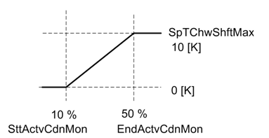
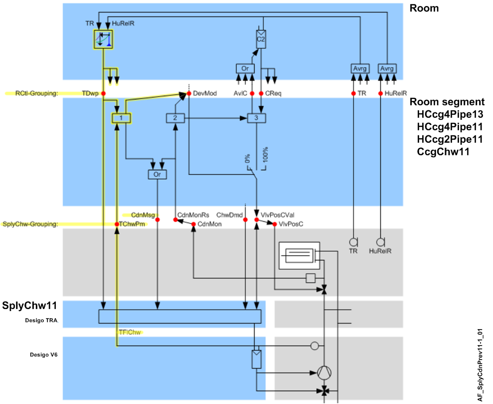

Supply chain condensation prevention (SplyCdnPrev11)
Overview
The application function "Supply chain condensation prevention 11" (SplyCdnPrev11) shifts the base chilled water setpoint up to avoid condensation at chilled ceiling radiant devices.
Function
There are two methods to shift the chilled water setpoint.
- Active condensation detectors from the devices are collected by grouping. The shift is dependent on the percentage of active condensation alarms.

- Dewpoints of the chilled water segments are collected and evaluated. Default = the average of the two highest values. The result is written to ChwTDwp with Prio 16 via CFC-connections.
If there are no valid dewpoints in the room segments, the default value of ChwTDwp is used (14 Celsius). It can also be overridden with a higher priority; for example, the source could be the extract dewpoint of the air handling unit.
In the main application function (SplyChw11) the larger of the shifted setpoint and the dewpoint will be used.
Configuration
 Parameters
Parameters
Description | Parameter | Default value |
|---|---|---|
Maximum shift of setpoint chilled water temperature | SpTChwShftMax | 10 [K], 18 [°F] |
Start value at active condensation monitor | SttActvCdnMon | 10 [%] |
End value at active condensation monitor | EndActvCdnMon | 50 [%] |
Temperature difference unit | TDiffUnit | [K] |
Interface
Interface | Description | Type | Ref. | Owned by |
|---|---|---|---|---|
ChwTDwp | Supply chain chilled water dewpoint temperature | APrcVal | ● | - |
ChwNumCdnMon | Supply chain chilled water number of active condensation monitor | ACalcVal | ● | - |
SplyChwMst | Manager for supply chain chilled water | GrpMaster | ◉ | SplyChw11 |
Engineering and commissioning
The figure shows the complete information flow for condensation prevention.
